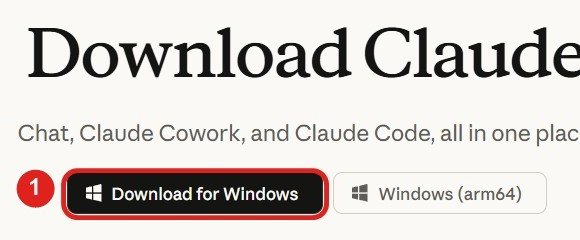
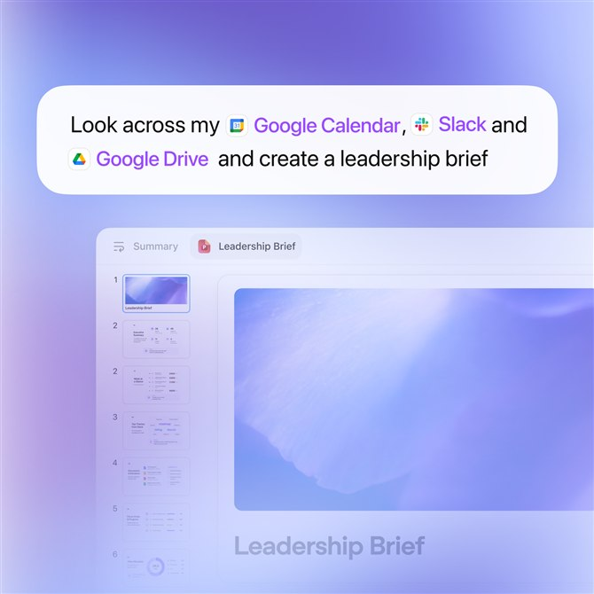
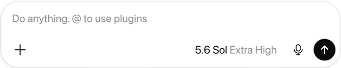
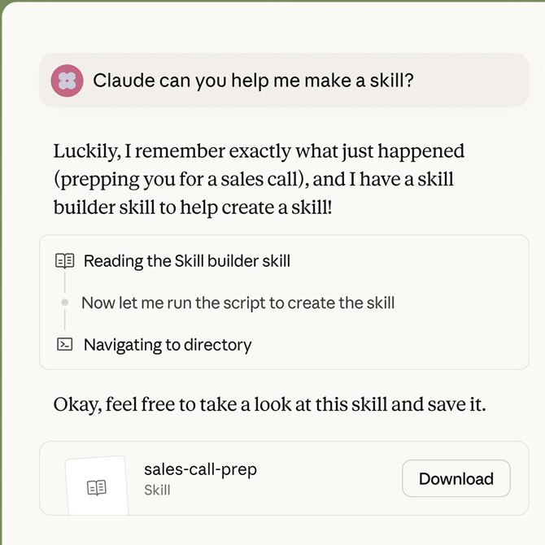
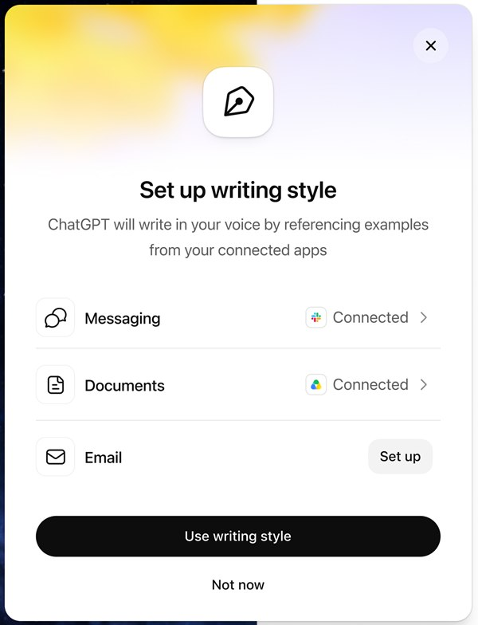

Sätt upp Claude eller ChatGPT
”Jag har laddat ner Claude. Vad gör jag nu?”
Båda är riktigt bra, och skillnaden mellan dem är liten. Vilken du än börjar med, gör de här fyra sakerna först. Det tar ungefär en timme, och du gör det en gång.
De fyra stegen i korthet
Steg 1Använd datorappen, inte webbläsaren
I appen på datorn kan AI:n nå filerna och programmen på din dator. Det är där den börjar göra uppgifter åt dig, i stället för att bara svara på frågor.
ClaudeLadda ner appen på claude.com/download och tryck på Download (1). Sidan visar knappen för just din dator, Windows eller Mac. Du kan börja gratis.

ChatGPTLadda ner appen på chatgpt.com/download. I appen kan du ge den en uppgift som går över flera av dina verktyg på en gång.

Steg 2Berätta vem du är, en gång
Klistra in Prompt 1 i en ny chatt och skicka den. Tryck sedan på ljudvågsknappen nere till höger i textrutan och prata fritt: om din vardag, ditt jobb och vad du vill ha hjälp med. AI:n ställer frågor, en i taget, tills den har en tydlig bild.
Prompt 1 · Fungerar i både Claude och ChatGPT
Jag vill att du lär känna mig så att du kan hjälpa mig bättre i varje framtida chatt. Strax byter jag till röstläge och berättar fritt om mig själv, mitt jobb och vad jag behöver hjälp med. Det blir rörigt: jag hoppar mellan ämnen och taligenkänningen gör fel ibland. Rätta mig inte, ta in vad jag menar. Medan jag pratar ställer du följdfrågor, en i taget och kort, tills du har en tydlig bild av: - vem jag är: bakgrund, intressen och hur jag vill att du pratar med mig - mitt jobb eller mina studier: vad jag gör, verktygen jag använder och hur en vanlig vecka ser ut - vad jag vill ha hjälp med: saker jag gör om och om igen, mina mål och det som tar tid Fråga gärna efter riktiga exempel, de säger mer än allmänna svar. Fråga aldrig om något jag redan har berättat. När du har tillräckligt säger du till och skriver två dokument: 1. "Om mig": vem jag är och hur jag vill att du jobbar med mig. 2. "Mitt jobb": vad jag gör, mina verktyg och vad jag behöver hjälp med. Skriv båda som tydliga punktlistor på svenska, så att jag kan klistra in dem i vilket AI-verktyg som helst.

När samtalet är klart har du två dokument. Spara dem. Skapa ett projekt och lägg dem där, eller klistra in dem i början av en ny chatt. Då slipper du förklara vem du är varje gång.
Steg 3Koppla verktygen du använder varje dag
Mejl, kalender, Google Drive, Slack och allt annat du jobbar i. När de är kopplade kan AI:n läsa och göra saker direkt i dem.
ClaudeDet heter Connectors. Tryck på plustecknet (1) vid textrutan, sedan Connectors (2) och Manage connectors (3). Slå på verktygen ett i taget.

ChatGPTDet heter plugins. Koppla de verktyg du vill ha, och skriv sedan @ i textrutan för att använda dem.

Steg 4Lär den att skriva som du
Det här är det viktigaste steget. När AI:n vet hur du skriver låter allt den skriver åt dig som du, och du slipper skriva om det.
ClaudeKlistra in Prompt 2. Claude går igenom texter du själv skrivit i verktygen från steg 3 och gör en skill av dem: en färdig instruktion som den använder varje gång den skriver något åt dig.
Prompt 2 · Gjord för Claude
Gå igenom verktygen jag har kopplat (till exempel Gmail, Google Drive och Slack) och hitta minst 20 texter som jag själv har skrivit: mejl, meddelanden och dokument. Använd bara texter jag skrivit, inte sådana jag fått. Analysera hur jag skriver: ton, meningslängd, hur jag hälsar och avslutar, ord och uttryck jag använder ofta, ord jag aldrig använder, och hur jag skriver olika i mejl, chatt och längre dokument. Gör sedan om det till en skill som heter "min-skrivstil", med tydliga regler och några korta exempel med mina egna formuleringar, så att du använder den varje gång du skriver något åt mig. Visa mig en sammanfattning av reglerna innan du sparar skillen.
Gör steg 3 först. Prompten fungerar bara om verktygen är kopplade. Kolla också att Code execution and file creation är på under Settings och Capabilities, och att skills är på under Customize och Skills. Har du inte skrivit så mycket i verktygen, klistra in några egna mejl direkt i chatten i stället.

ChatGPTSlå på writing style under Settings och Personalization. Där väljer du vilka verktyg den får läsa, till exempel meddelanden, dokument och mejl, och ChatGPT går själv igenom hur du skriver. Funktionen finns i betalda planer men rullas fortfarande ut.

Ser du inte writing style, eller har du gratisversionen? Klistra in tre till fem mejl du själv skrivit i en chatt, tillsammans med prompten nedan, och spara svaret i ditt projekt.
Här är några texter som jag själv har skrivit. Analysera hur jag skriver: ton, meningslängd, hur jag hälsar och avslutar, ord jag använder ofta och ord jag aldrig använder. Skriv sedan en kort lista med regler för min skrivstil, med några exempel på mina egna formuleringar, så att du kan skriva precis som jag. Skriv på svenska. [klistra in dina texter här]
Det viktigaste tipset
Gör det en gång, ordentligt
De här fyra sakerna gör du en gång. Efter det slipper du förklara vem du är, klistra in samma bakgrund om och om igen, eller skriva om det AI:n skrev för att det inte lät som du. En timme nu sparar dig den tiden i varje chatt efteråt.
Fortsätt
Nästa steg när du är igång
Varje vecka visar jag en riktig uppgift du kan låta AI göra, steg för steg, i veckobrevet AI med Joud. Gratis, och du kan avsluta när du vill.
Vill du lära dig AI, eller veta om ditt företag kan använda det?
Jag hjälper dig komma igång, från första frågan till färdig rutin. Hör av dig så tar vi reda på om och var AI passar för dig eller ditt företag.